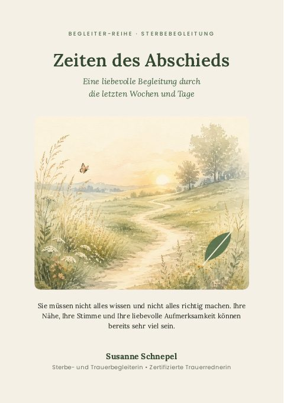

Sterbebegleiter
Zeiten des Abschieds
Eine liebevolle Begleitung durch die letzten Wochen und Tage
Wenn ein geliebter Mensch seine letzte Lebenszeit erreicht, fehlen oft die Worte. Dieser Begleiter erklärt, welche Veränderungen in der letzten Lebensphase möglich sind, und zeigt kleine Wege, Ihren Menschen liebevoll zu begleiten. Und er erinnert Sie daran, dass auch Sie Unterstützung verdienen.
Für Angehörige, die einen sterbenden Menschen begleiten · 24 Seiten · DIN A4
Als PDF zum Ausdrucken 19 €
Gedruckt per Post 34 €